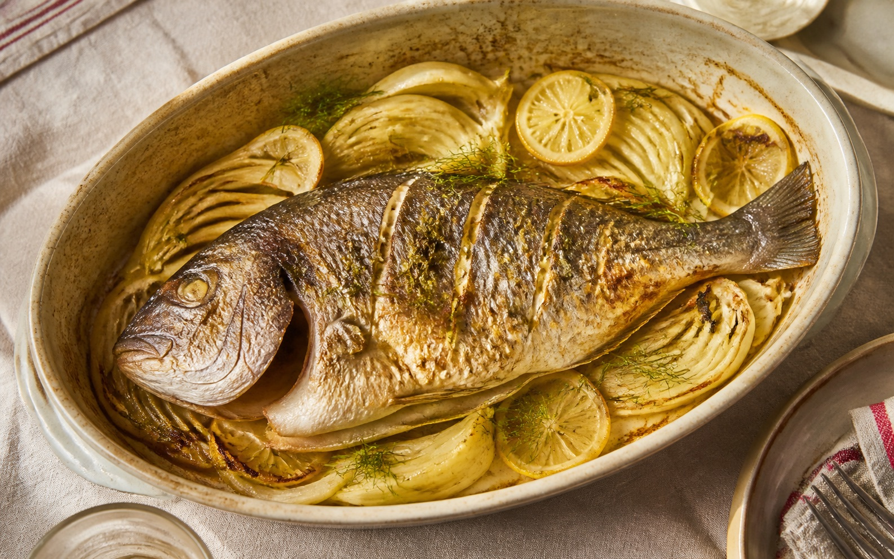

Daurade Royale au Four, Fenouil et Citron Confit

La daurade royale, poisson noble des côtes méditerranéennes, se prête admirablement à une cuisson au four qui préserve sa chair délicate et nacrée. L'association avec le fenouil, dont l'anis subtil se marie parfaitement au goût iodé du poisson, et le citron qui apporte fraîcheur et acidité, compose un plat d'une grande harmonie gustative. Cette préparation, courante dans la cuisine provençale, demande peu de gestes mais exige une attention précise sur les temps de cuisson pour éviter d'assécher la chair. Choisissez un poisson bien frais, à l'œil vif et aux écailles brillantes, pour garantir la réussite de cette recette conviviale et parfumée, idéale pour un déjeuner du week-end.
Ingrédients
- 1 piece daurade royale entiere de 1,2 kg environ, ecaillee et videe
- 2 bulbes fenouil frais avec ses fanes
- 2 pieces citrons non traites
- 4 gousses ail nouveau non epluche
- 6 cl huile d'olive vierge extra de qualite
- 1 branche romarin frais
- 3 branches thym frais
- 10 cl vin blanc sec type muscadet
- 1 piece oignon rouge nouveau
- 1 pincee fleur de sel de Guerande
- 1 pincee poivre du moulin
- 1 poignee olives noires de Nyons denoyautees
Préparation
Emincez finement les bulbes de fenouil dans le sens de la largeur, en conservant quelques fanes pour la decoration. Coupez l'oignon rouge en fines lamelles. Ecrasez legerement les gousses d'ail sans les eplucher pour liberer leurs aromes sans qu'elles brulent. Ne coupez pas le fenouil trop epais, il resterait croquant et ne fondrait pas correctement pendant la cuisson au four.
Rincez la daurade sous l'eau froide et sechez-la soigneusement avec du papier absorbant, l'humidite residuelle empecherait une belle coloration de la peau. Incisez legerement les flancs du poisson en trois endroits pour favoriser une cuisson homogene. Glissez dans la cavite ventrale deux rondelles de citron, une branche de thym et un peu d'ail ecrase pour parfumer la chair de l'interieur.
Dans une grande poele, faites chauffer trois cuillerees d'huile d'olive a feu moyen. Faites revenir le fenouil et l'oignon rouge pendant 8 a 10 minutes en remuant regulierement, jusqu'a ce qu'ils deviennent translucides et legerement dores. Deglacez avec le vin blanc et laissez reduire deux minutes. Cette etape prealable evite que le fenouil rende trop d'eau dans le plat de cuisson.
Prechauffez le four a 200 degres Celsius en chaleur tournante. Etalez le fenouil confit au fond d'un plat a gratin suffisamment grand pour accueillir le poisson a plat. Repartissez les gousses d'ail restantes, quelques rondelles de citron et les olives noires autour. Ce lit de legumes servira de support aromatique et empechera la chair du poisson de coller au plat.
Posez la daurade sur le lit de fenouil. Arrosez genereusement le poisson avec le reste d'huile d'olive, salez avec la fleur de sel et poivrez. Disposez le romarin et les fanes de fenouil sur le dessus. Versez un filet de jus de citron sur toute la longueur du poisson pour parfumer la peau qui va dorer au four.
Enfournez pendant 25 a 30 minutes selon la taille du poisson, en arrosant a mi-cuisson avec le jus de cuisson pour eviter que la chair ne se dessache. La daurade est cuite lorsque la chair se detache facilement de l'arete centrale a la pointe d'un couteau et devient opaque. Ne prolongez pas la cuisson au-dela, la chair deviendrait seche et filandreuse.
Laissez reposer le poisson hors du four pendant 5 minutes avant de le decouper, cela permet aux sucs de se repartir dans la chair. Levez les filets delicatement a l'aide d'une spatule large en prenant soin de ne pas les briser. Servez immediatement avec le fenouil fondant et les sucs de cuisson, accompagne d'un filet d'huile d'olive fraiche.
Conseils et astuces
- Pour verifier la fraicheur de la daurade, appuyez sur la chair : elle doit reprendre sa forme immediatement et ne pas laisser d'empreinte durable.
- Dans certaines regions cotieres, on ajoute des pommes de terre en rondelles fines sous le fenouil pour absorber les sucs et constituer un accompagnement complet.
- Les restes se conservent 24 heures maximum au refrigerateur dans un contenant hermetique ; evitez de reconges le poisson deja cuit pour preserver sa texture.
- Un vin blanc sec et mineral comme un Picpoul de Pinet ou un Sancerre accompagnera parfaitement l'iode du poisson et l'anis du fenouil.
Questions fréquentes
Peut-on preparer ce plat avec une daurade surgelee ?
Oui, mais il faut la decongeler completement au refrigerateur pendant 24 heures et bien l'eponger avant cuisson, car l'exces d'humidite empeche une belle coloration de la peau au four.
Comment adapter la recette si je n'aime pas le fenouil ?
Vous pouvez le remplacer par des poireaux emincés ou des courgettes en rondelles, en gardant le meme temps de precuisson a la poele pour eliminer l'excedent d'eau avant l'enfournement.
Quelle est l'erreur la plus frequente lors de cette recette ?
La cuisson excessive est l'erreur la plus courante : verifiez la cuisson des 22 minutes avec la pointe d'un couteau pres de l'arete centrale, la chair doit rester nacree et se detacher facilement sans etre seche.